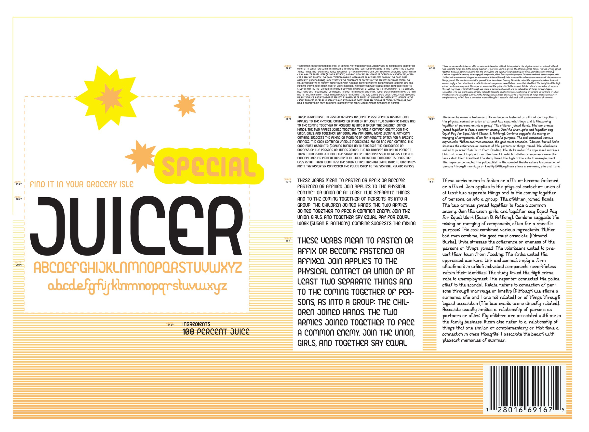
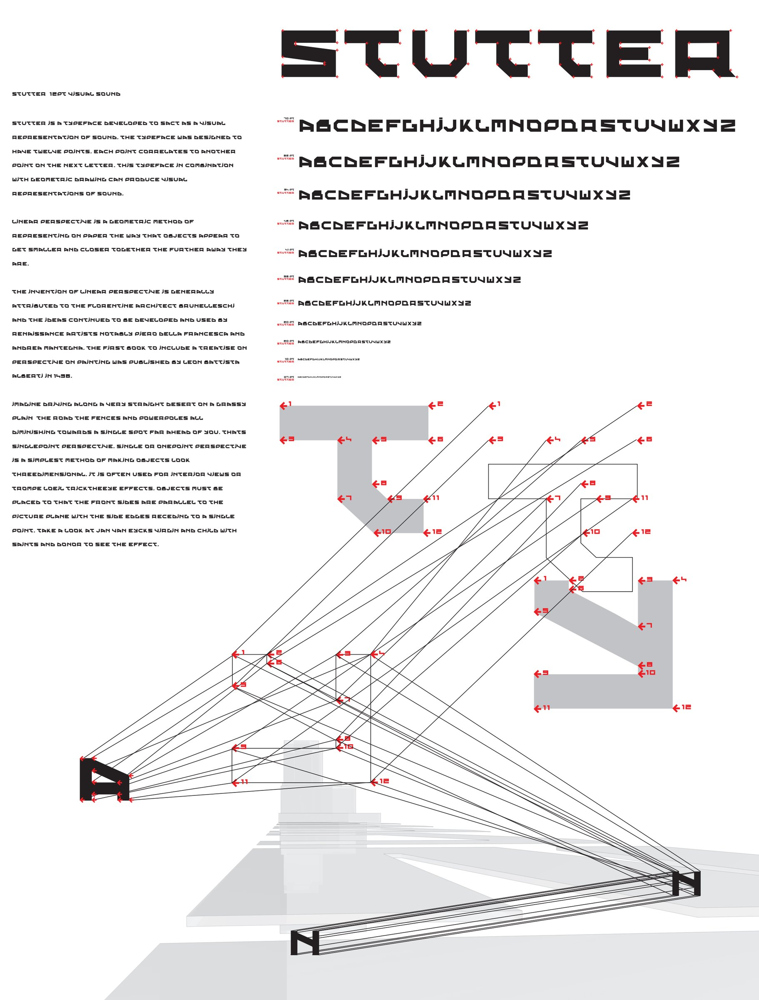
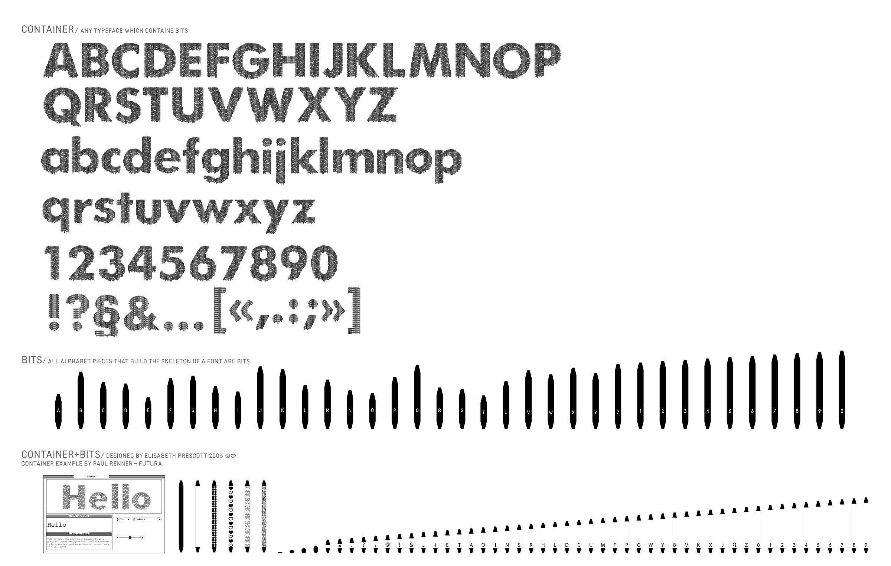
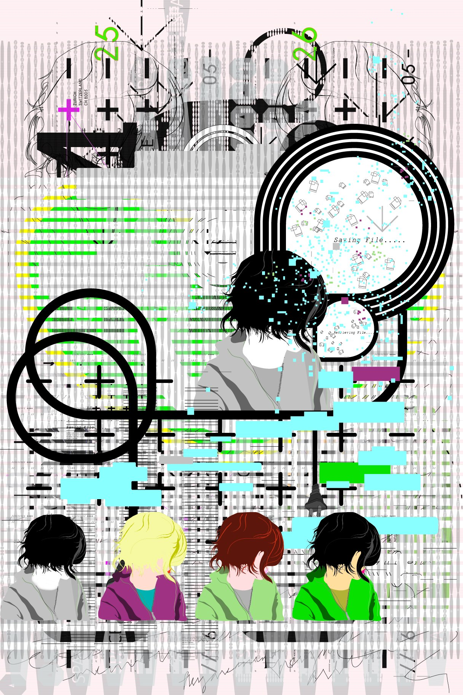
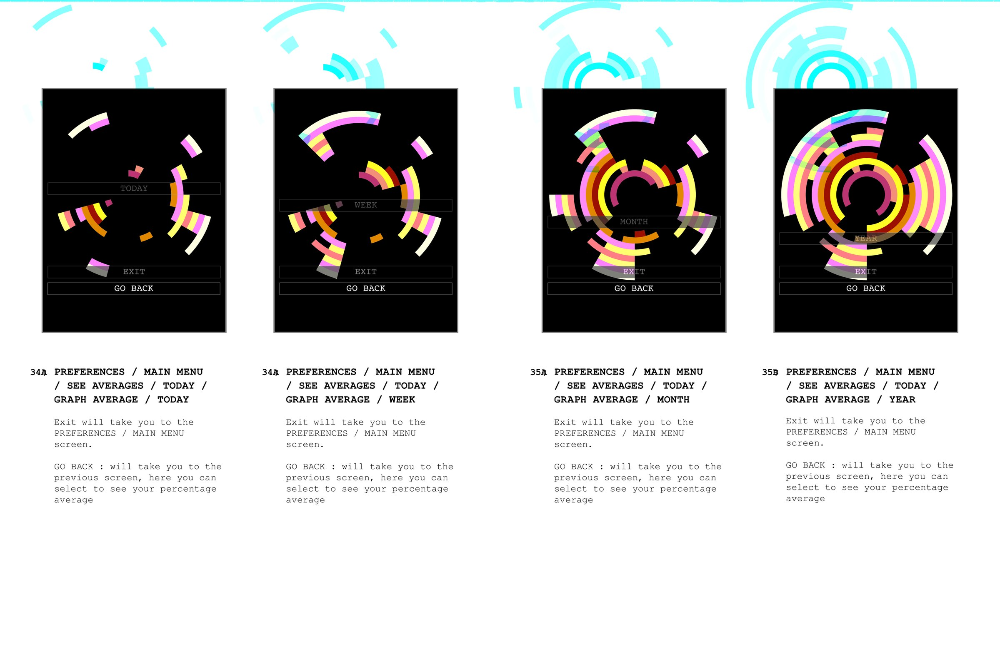
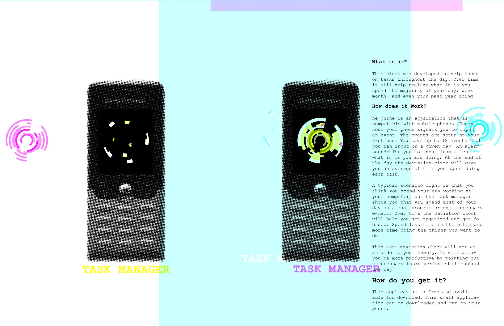

Personal · Exploratory · Early work
Early work
School projects in typeface design, posters and an early phone application concept.
Role
Designer
Type
School projects
Scope
Typeface design, posters, mobile app concept

The problem
Self-directed school projects exploring type, print and interaction.
The approach
Typeface work includes Juicer, shown as packaging; Stutter, a twelve-point typeface designed as a visual representation of sound and combined with perspective drawing; and Container, a type specimen built from modular bits.
A layered memory poster combines illustration and graphic systems, and a phone application concept, Task Manager, visualises how time is spent across activities as a colour-coded clock.





Leadership
Her own work as a design student.